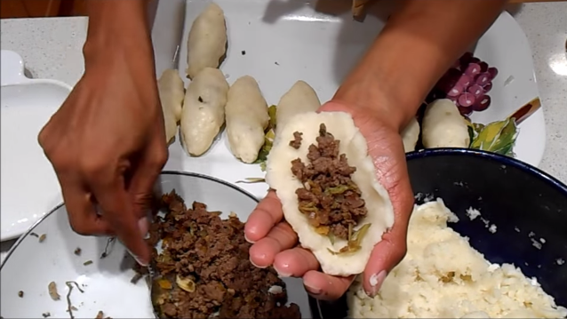

Carimañola o Caribañola
La carimañola, caribañola o caramañola es un frito típico de la Costa Caribe colombiana y de Panamá.
En la Costa Caribe colombiana, las caribañolas están muy arraigadas en el departamento del Atlántico. Se comen al desayuno, como comida rápida popular, como refrigerio en cafeterías o como picada.
Ingredientes
- 1.5 lb de Yuca
- 1 lb de Carne Molida
- Verduras varias para guisar la carne molida (ej. Ají, Cebolla, Cebolla larga, Cilantro y/o Ajo)
- sal y pimienta al gusto
Preparación
Empezamos guisando* la carne molida, la echamos en un sarten a medio fuego, con una espatula (o parecido) la esparcimos. Empezamos a agregar las verduras, sal y pimienta al gusto; (Se aconceja no agregar tomate porque pueden quedar un poco acidas las carimañolas) mezclan y lo tapan hasta que las verduras y la carne se hayan cocido. Destapar para que la carne se dore y no quede muy humeda. Se debe dejar aproximadamente 10min para que quede lista.
En una olla grande echamos agua y sal, pendemos fuego y en el momento que esté hirviendo se echa la yuca (pelada y abierta un poco por la mitad) para que se cocine, tapamos y esperamos a que se ablande. No dejar que se ablande mucho, solo lo suficiente para que esté cocida.
Antes de moler la yuca, dejamos que se enfrie unos 10min. aproximadamente y procedemos a moler.
Cuando tengamos lista la masa, se unta un poco de aceite en las manos y cogiendo de a porciones empezamos a aplanar y a darle forma ovalada. Se coloca en la mitad de la palma de la mano y se rellena con la carne, unimos los bordes asegurando de que la carimañola quede bien cerrada evitando que el contenido no se salga.
Para finalizar colocamos a freir nuestras carimañolas, importante es que el aceite cubra toda la carimañola. Cuando estén doradas, se procede a sacar y se colocan en una servilleta para que escurra la grasa.